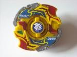

Shining God MS
| Shining God MS (Metal Sun) | |
|  | |
| Number: | MA-24 |
|---|---|
| System: | HMS |
| Type: | Defense |
Contents
Shining God MS is the last Beyblade in the Gimmick Specialty Series, and the last Beyblade released until the advent of Metal Fight Beyblade. Its gimmick is mode change.
Bit Protector (BP): God Emblem
The Bit Protector of this Beyblade is the God Emblem. It is the third mold version of Bit Protectors.
Attack Ring (AR): God Smasher
- Weight: 18 grams
God Smasher has Force Smash in left-spin from its Metal Frame, and some Smash Attack in right-spin from its ABS Caul. God Smasher has a larger attack range compared to Smash Leopard (which has the same Metal Frame) due to its large, aggressively designed ABS Caul. There are two points on each side of the ABS Caul that provide some decent Smash Attack, but the Force Smash it is capable of in left-spin is not terribly strong. Overall, God Smasher is unimpressive because of the multitude of better options released before it.
God Smasher shares the same Metal Frame as both Smash Phoenix from Dranzer MF and Smash Leopard from Dark Leopard MS.
Use in Force Smash Customization
God Smasher's Force Smash in left-spin can be put to use in the following customization.
- AR: God Smasher (Shining God MS)
- WD: Circle Heavy
- RC: Tornado Change Core (Dark Leopard MS)
Use in Smash Attack Customization
If you are choosing God Smasher for any reason, it should be for its Smash Attack in right-spin. Even though there are better choices out there, this customization puts its Smash Attack to good use.
- AR: God Smasher (Shining God MS)
- WD: Circle Wide
- RC: Grip Flat Core (Ultimate Version) (Dragoon MS UV)
Weight Disk (WD): CWD God Ring
- Weight: 18 grams
CWD God Ring is the most useful part of Shining God MS. Its uses are identical to that of CWD Defense Ring from Sea Dragon. The only major difference is that it is not fixed; but this doesn't cause its use to be diminished in any way. Its almost completely circular shape combined with its heavy, centralized weight add controllability, higher spin velocity, and higher Defense to the Beyblades they are added to. The former two attributes make CWD God Ring a perfect choice for Defense types, and the added controllability and weight lend themselves well to Upper Attack-based customs.
Use in Upper Attack Customization
CWD God Ring's compact, heavy nature can be put to use in Upper Attack customs.
- AR: Samurai Upper (Samurai Changer MS)
- WD: CWD God Ring (Shining God MS)
- RC: Metal Flat Core (Advance Striker)
Use in Defense Customization
CWD God Ring will add more defense and a higher spin velocity through its weight. CWD God Ring will also help defend against the Upper Attack is it sure to face having such a high RC.
- AR: Samurai Upper (Samurai Changer MS)
- WD: CWD God Ring (Shining God MS)
- RC: Metal Ball Core (Sea Dragon)
Running Core (RC): Shooter Change Core Gamma
- Weight: 6 grams
Shooter Change Core Gamma is one of the most unique RC's ever released. On a normal Beyblade, the WD is always placed just below the AR, and on top of the RC, but on Shooter Change Core Gamma, it is positioned on the bottom of the RC. Because of this, there is space between the AR and RC, and that space enables Upper Attack CWDs such as Phantom Fox MS's CWD Circle Attacker to be used in Upper Mode.
Along with this is the fact that the weight of a Beyblade using this RC will be more focused towards the stadium floor than on any other Beyblade. This can be advantageous to Defense oriented customizations as their main purpose is to be able to hold their ground while being attacked. However, with this advantage, comes a disadvantage; because the WD is so close to the ground, and the RC itself is not very tall, if it is knocked off balance, there is a high probability that it will begin to scrape the stadium and KO itself.
Shooter Change Core Gamma's gimmick is mode change. It has a mechanism inside of the RC that can be rotated to change the tip. Compared to Samurai Changer MS's Battle Change Core which essentially changes randomly during battle, Shooter Change Core Gamma will not. Its tip can become either sharp or flat depending on spin direction. In right-spin, the flat tip will be used, and in left-spin the sharp tip will be ejected. The flat tip is the width as Battle Change Core's flat tip and Dragoon MS UV's rubber tip.
The flat tip can be used effectively in Attack customizations, but because of the overall shape of the RC and the fact that it is plastic, Shooter Change Core Gamma will never see mainstream use among Attack-enthusiasts. As for its defensive capabilities, they are worth experimenting with, but its advantages and disadvantages must always be kept in mind.
Use in Defense Customization
Shooter Change Core Gamma, while it is most certainly an unorthodox choice for any type of customization, can be used in a Defense customization as long as it is in left-spin (sharp). This custom can be considered an upgrade to the same customization but using Shooter Change Core Alpha from Bloody Devil MS. Shooter Change Core Gamma's sharp tip in left-spin is more naturally fitted for Defense customizations.
- AR: Samurai Upper (Samurai Changer MS)
- WD: CWD Defense Ring (Sea Dragon)
- RC: Shooter Change Core Gamma [sharp tip] (Shining God MS)
It is also worth considering the use of Circle Heavy in this custom as well, because its diameter is less than that of CWD Defense Ring, which could result in less self-KOs.
Other Versions
- Shining God MS - Tournament Prize (Gold)
Gallery
-
Sticker sheet
-
God Smasher
-
God Smasher, Metal Frame pictured
-
Shining God MS 3/4 view
-
Shining God MS bottom view
-
Shooter Change Core Gamma w/God Ring attached, flat tip
-
Shooter Change Core Gamma w/God Ring attached, sharp tip
-
CWD God Ring
-
Shooter Change Core Gamma
Overall
Shining God MS is a highly sought after Beyblade by many Beybladers, but as a whole it is not the most necessary purchase. God Smasher and Shooter Change Core Gamma do not present anything worthwhile competitively and while CWD God Ring may be a great part, it can be easily replaced by parts in much easier to obtain Beyblades.
If you can track one down, Shining God MS is a welcome addition to any HMS collection. Aside from its collectible value, CWD God Ring has numerous competitive uses and Shooter Change Core Gamma is an interesting part to play around with.